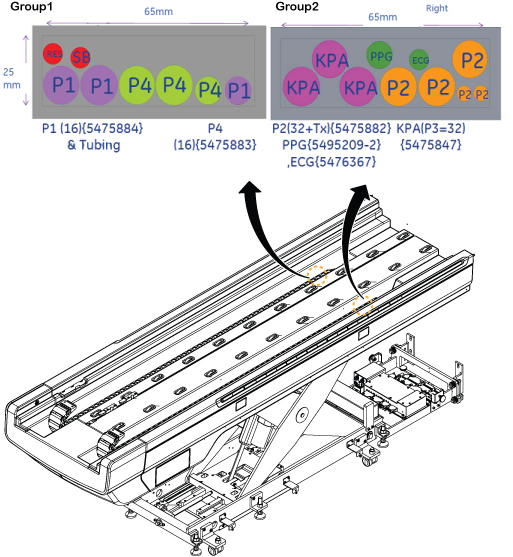
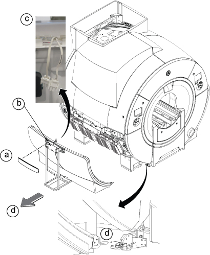
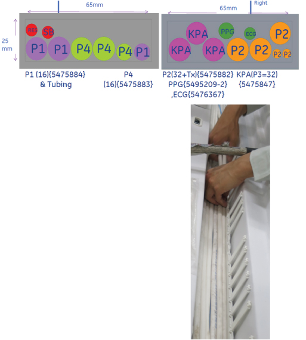

- 00000018WIA3018C230GYZ
- id_156675601.26
- Sep 11, 2025 3:43:36 PM
Replacing the patient table cable
Prerequisites
| Personnel requirements | |||
|---|---|---|---|
| Required persons | Preliminary requirements | Procedure | Finalization |
| 1 | - | 6 hours | 90 minutes |
| Tools and test equipment | |||
|---|---|---|---|
| Item | Quantity | Part number | Manufacturer |
| Nonmagnetic Titanium Service Tool Kit | 1 | 5113258 | - |
| Screw Rod | 1 | 5500230 | - |
| Replacement parts | |||
|---|---|---|---|
| Item | Quantity | Part number | Manufacturer |
| Cable / Cable Track | 1 | Refer to FRU Manual | - |
| Safety | ||||
|---|---|---|---|---|
|
Before working in any GE HealthCare MR suite or doing any GE HealthCare service procedure, you must:
If you have any safety concerns at any time, do not begin work or immediately stop work and move to a safe location. Immediately contact your supervisor or site safety officer for instructions on how to proceed. | ||||
| ||||
About this task
This procedure describes the removal of cables in the cradle. To remove the defective cable, it’s necessary to remove all of the cables (from the cradle) which are in the same group described below.
Group 1: Cables in Left Cable Track
-
P1 Cable
-
P4 Cable
-
Resp Tube
-
Squeeze Bulb (SB) Tube
Group 2: Cables in Right Cable Track
-
P2
-
TDI PA
-
PPG
-
ECG

After cable removal in side of cradle assembly, the defective cable will be replaced from the Table Control Box area.
Common procedure between Group1 and Group2 cable removal
Procedure
-
(For Telescopic cover) Remove the telescopic cover. See Telescopic Cover Removal.
(For Bellows cover) Remove the bellows cover from the bracket and tighten it with six nylon tape under the table.
Figure 2. Lift bellows cover 
- Insert the screw rod and rotate it to clockwise until it engages with the carriage plate.
Figure 3. Screw rod 
Removal of cable in the cradle
About this task
Remove Group1 cables or Group2 cables which includes the defective cable.
Group 1 cables removal from cradle
Procedure
Group 2 cables removal from cradle
Procedure
Cable removal from track
Procedure
- Remove the coil cables (M1356~M1365) at the DPP RRx using the following steps.
- Remove the lower side cover assembly (left) using the following steps.
- Remove the nameplate cover and remove two screws.
- Fix the side cover dolly to the lower side cover assembly with turning two knobs.
- Disconnect the connectors for light.
- Pull to unlatch the hook and move the lower side cover assembly.
Figure 23. Lower side cover assembly (left) 
- Disconnect the coil cables (M1356~M1365) from DPP RRx.
- Loosen eight captive screws.
- Flip the DPP RRx to access the bottom.
- Disconnect the coil defective cables.
Figure 24. DPP cables 
- Withdraw the coil cables to the table side.
- Remove the lower side cover assembly (left) using the following steps.
Restore the cable and cable track by reverse order of removal. Make sure the cables in track are stored straightly per illustration below.Notice 
Figure 28. Cable track cross section view 